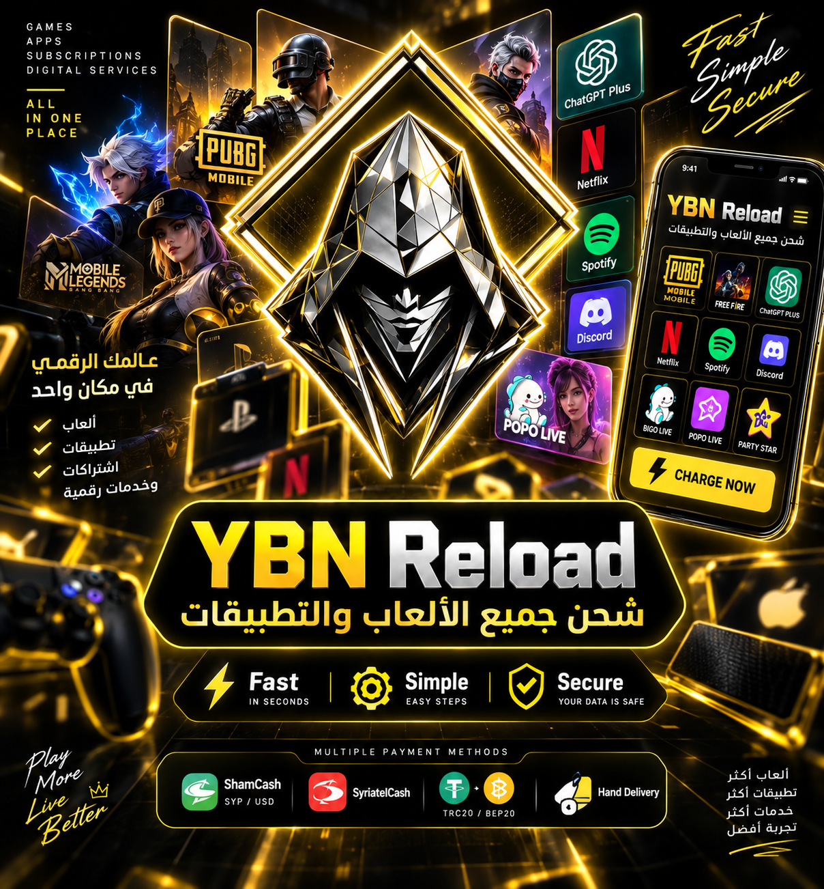
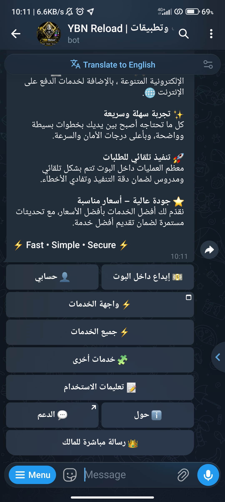
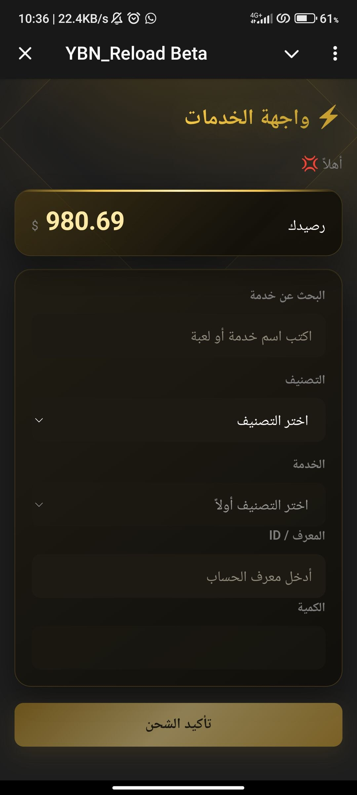
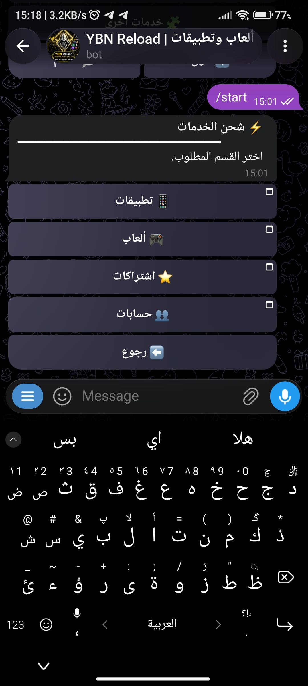
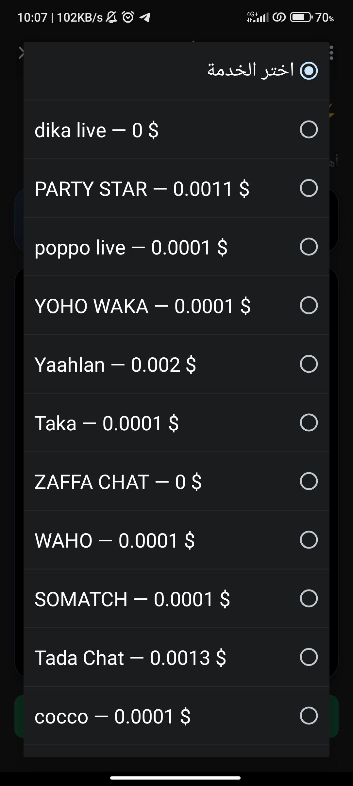
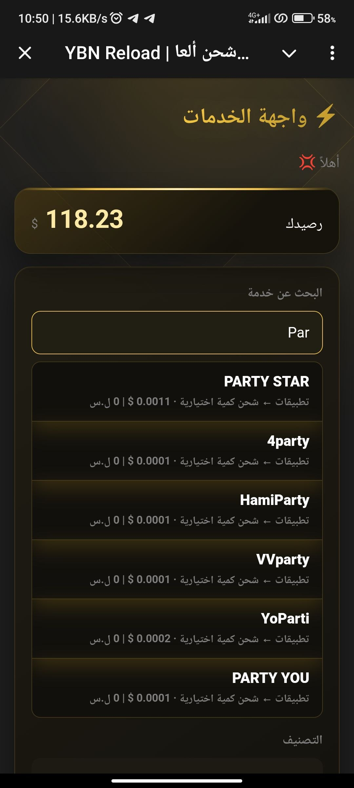

شحن الألعاب
شحن فوري لألعابك المفضلة بخطوات بسيطة وآمنة.
YBN Platform
من شحن الألعاب لغاية الاشتراكات والخدمات الرقمية، YBN Reload بتجمعلك كل شي بمكان واحد داخل Telegram — بدون تعقيد، وبواجهة واضحة بتخليك تعرف وين وصل طلبك بأي لحظة.
Fast • Simple • Secure

من داخل البوت
لقطات فعلية من البوت توضحلك رحلة تصفح واختيار الخدمة خطوة بخطوة.





ما الذي نقدمه؟
كل خدمة صممناها لتكون سريعة وواضحة من أول خطوة لآخرها.
شحن فوري لألعابك المفضلة بخطوات بسيطة وآمنة.
رصيد وباقات تطبيقاتك جاهزة خلال دقائق.
فعّل اشتراكاتك المفضلة بدون تعقيد أو انتظار.
كل ما تحتاجه من خدمات ومنتجات رقمية بمكان واحد.
خطوات واضحة
ابدأ رحلتك من بوت YBN Reload الرسمي على Telegram.
تصفّح الخدمات المتوفرة واختر يلي بيناسبك.
عبّي التفاصيل المطلوبة بخطوات سريعة وواضحة.
تأكد من كل التفاصيل قبل ما تأكد طلبك.
راقب حالة طلبك لحظة بلحظة من داخل البوت.
YBN Reload
ما رح تضيع وقتك بالبحث — كل شي منظم وواضح من أول لحظة تفتح فيها البوت، وطلباتك دايمًا تحت متابعتك.
مساعدة سريعة
YBN Reload منصة رقمية تتيح الوصول إلى خدمات شحن الألعاب والتطبيقات والاشتراكات والخدمات الرقمية من خلال بوت Telegram.
تتضمن المنصة خدمات شحن الألعاب وشحن التطبيقات والاشتراكات والخدمات والمنتجات الرقمية، بحسب ما يتوفر داخل البوت.
افتح البوت الرسمي على Telegram، واختر الخدمة، ثم اتبع التعليمات لإدخال المعلومات المطلوبة ومراجعة طلبك.
افتح البوت واختر خدمة الشحن المتاحة، ثم اتبع الخطوات الظاهرة للخدمة التي اخترتها.
يمكنك متابعة حالة طلبك أو الوصول إلى خيارات الدعم المتاحة من خلال بوت YBN Reload الرسمي.
نحن هنا للمساعدة
عندك استفسار أو محتاج مساعدة؟ اختر القناة الأنسب إلك وفريقنا بيتابع معك مباشرة.
جاهز تبدأ؟
افتح البوت الرسمي الآن وجرّب بنفسك كيف الخدمة صارت أسهل.